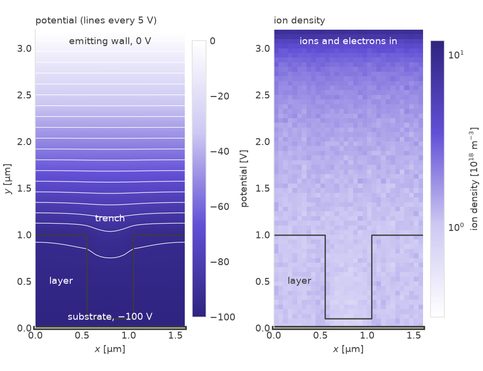
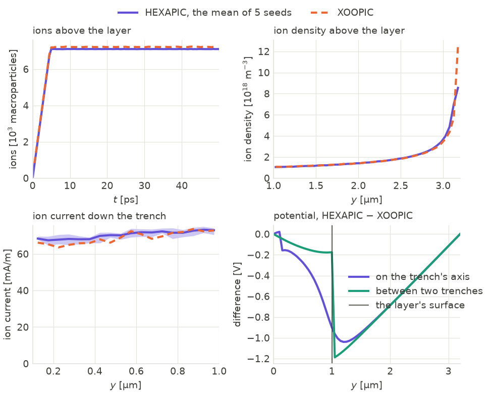

Ion deposition in a trench#
A substrate at \(-100\) V is covered by a dielectric layer with a trench. The wall opposite to it stands for the edge of a plasma sheath: it emits ions and electrons. The ions fall through the 100 V onto the layer and into the trench, and the electrons turn back. The case has a dielectric region, dielectric walls inside the domain, a biased wall and two emitters. It is taken from XOOPIC and run with both codes. The two codes treat the dielectric differently, so only the flow above the layer and in the trench is compared, and only before the layer has charged.
Setup#
Domain |
1.6 µm × 3.2 µm, periodic in \(x\); 32 × 64 cells of 50 nm |
Substrate |
the bottom wall, at \(-100\) V, absorbing |
Layer |
a dielectric region with the relative permittivity \(\varepsilon_r = 10\), 1 µm thick |
Trench |
0.5 µm wide and 0.9 µm deep, in the middle; 0.1 µm of the layer is left under it. Its two sides and its bottom are dielectric walls. |
Top wall |
at 0 V; it emits ions and electrons downwards over its whole width |
Ions |
\(1.5\times10^{5}\ \mathrm{A/m^2}\) (0.24 A per metre of depth), 0.025 eV, 40 electron masses |
Electrons |
\(5\times10^{4}\ \mathrm{A/m^2}\) (0.08 A/m), 5 eV |
Collisions |
Monte Carlo collisions of both species with argon at 10 mTorr, with the cross sections multiplied by 40 |
Particles |
1000 per macroparticle: 75 ions and 25 electrons per step |
Time step |
\(5\times10^{-14}\) s |
Run |
1000 steps (50 ps), output every 10 steps, no charge smoothing |
Field solver |
GMGa3, the 2-D multigrid; relative tolerance \(10^{-5}\) |
Cost |
about 4 s on one NVIDIA A100 |
An ion crosses the domain in about 120 steps. The run is eight such transits: the flow is steady, and the charge that the ions bring changes the potential by less than 0.1 V. The charge of the ions in flight changes it by less than 0.01 V, so the potential is that of the empty geometry.

The potential and the ion density of the steady state in HEXAPIC, with the outline of the layer. In HEXAPIC the ions are also inside the layer (see below).
Running#
python examples/walls/deposition/case.py runs/deposition --run
python examples/walls/deposition/analyze.py runs/deposition
case.py writes runs/deposition/case.toml and, with --run, runs
build/HEXAPIC on it (--hexapic names another binary). case.toml beside
the script is the same case, for a run without Python. analyze.py prints
the numbers below and writes results.json and the two figures into the
run’s directory. Given several runs, it prints their mean and standard
deviation.
Option of |
|
|---|---|
|
run HEXAPIC on the case |
|
write the frames that HEXAPIC / VIZ shows during the run |
|
the seed of the random numbers |
|
write the case as an XOOPIC deck, |
Results#
Ion flow and potential against XOOPIC#
The numbers are means over the outputs from step 300 on. HEXAPIC is run with five seeds:
for s in 1 2 3 4 5; do
python examples/walls/deposition/case.py runs/deposition_$s --seed $s --run
done
python examples/walls/deposition/analyze.py runs/deposition_?
Both codes are reduced in the same way. The ions are counted in each cell, with the sums of their \(v_y\) and of their \(|v|^2\). The ion current through a row of cells of the trench is
with the charge \(q\) of an ion, the weight \(w\) of a macroparticle, the cell size \(\Delta y\) and the sum over the ions in that row. An even flow of \(1.5\times10^{5}\ \mathrm{A/m^2}\) over the width of the trench is 0.075 A/m.

Top: the ions above the layer against time, and their density against the height \(y\). Bottom left: the ion current through each row of cells of the trench, with the range of the five HEXAPIC seeds. Bottom right: the difference of the potentials of the two codes along two vertical lines.
Steady state |
HEXAPIC, 5 seeds |
XOOPIC |
Difference |
|---|---|---|---|
Ions above the layer (macroparticles) |
\(7106 \pm 1\) |
7224 |
\(-1.6\) % |
Ion current into the trench, top row of cells [A/m] |
\(0.0730 \pm 0.0015\) |
0.0728 |
\(+0.2\) % |
Ion current onto the bottom of the trench, lowest two rows [A/m] |
\(0.0679 \pm 0.0011\) |
0.0657 |
\(+3.4\) % |
Mean energy of the ions in those two rows [eV] |
\(98.189 \pm 0.002\) |
96.33 |
\(+1.9\) % |
Potential at the mouth of the trench [V] |
\(-90.93\) |
\(-90.03\) |
0.90 V |
Potential on the surface of the layer, between two trenches [V] |
\(-94.62\) |
\(-94.44\) |
0.18 V |
Potential one cell above that point [V] |
\(-93.36\) |
\(-92.17\) |
1.19 V |
Potential at the bottom of the trench [V] |
\(-99.88\) |
\(-99.90\) |
0.02 V |
Electrons in the domain (macroparticles) |
\(158.6 \pm 0.6\) |
157.5 |
\(+0.7\) % |
The ion density above the layer, the current into the trench and the number of electrons agree within 2 %. The potentials differ by at most 1.2 V of 100 V. The remaining differences have four causes.
The surface of the layer. HEXAPIC sets the permittivity on the nodes, and a cell edge between a node of the layer and a node outside takes a value in between. The layer therefore acts about half a cell thicker than in XOOPIC, which changes the permittivity exactly at the surface. The field above the layer is 43 V/µm, so this shifts the potential there by about 1 V. The difference is largest one cell above the surface and falls linearly to zero at the top wall.
The emitter. XOOPIC starts each particle on the wall. HEXAPIC starts it half a cell inside the domain, where the potential is already \(-1.07\) V. The ions of HEXAPIC miss this part of the fall, and the two rows of cells at the emitter hold about 200 fewer of them. This gives the 1.6 % in the number of ions.
The collisions. In XOOPIC the charge exchange with the gas takes
2.8 eV from the mean energy of the ions at the bottom of the trench: without
its MCC block, XOOPIC gives 99.18 eV there, 1.0 eV above HEXAPIC as the
emitter explains. In HEXAPIC no ion and no electron collided in this run.
The keys scale_electron and scale_ion have no effect in the current
version: the collision rates in the log are those of the cross sections
without the factor 40.
The walls of the trench. XOOPIC absorbs an ion that reaches a side of the trench. In HEXAPIC a dielectric wall inside the domain does not stop the particles: an ion that reaches a side moves on into the layer, and an ion inside the layer can enter the trench. HEXAPIC has 3.4 % more current at the bottom of the trench. This is the likely cause; it was not measured separately.
What is not compared#
XOOPIC stops the particles at the surface of a dielectric region and keeps their charge there. In HEXAPIC a dielectric region changes the permittivity only: the ions cross the layer and are absorbed by the substrate, and no charge stays on the layer or in the trench. The totals over the domain therefore differ:
Steady state, whole domain |
HEXAPIC, 5 seeds |
XOOPIC |
|---|---|---|
Ions (macroparticles) |
\(8739 \pm 1\) |
7652 |
Kinetic energy [J/m] |
\(6.06\times10^{-11}\) |
\(4.17\times10^{-11}\) |
Field energy [J/m] |
\(2.840\times10^{-8}\) |
\(3.380\times10^{-8}\) |
The two field energies are also not the same integral. Computed from the two potentials with one formula, \(\int \tfrac{1}{2}\varepsilon_0\varepsilon_r E^2\,\mathrm{d}A\), they are \(3.02\times10^{-8}\) and \(3.00\times10^{-8}\) J/m.
In XOOPIC the layer charges: at the end of this run its surface holds about \(6\times10^{-6}\ \mathrm{C/m^2}\) and its potential has risen by 0.07 V. Over a run a thousand times longer this charge would change the flow, and HEXAPIC would not follow it. The comparison holds for the uncharged layer only.
XOOPIC’s numbers come from its stored run in reference/xoopic/.
analyze.py --xoopic DIR takes them from a new run of XOOPIC instead (see
reference/SOURCE.md).
Files#
|
the case as a PICMI script |
|
the case as |
|
the ion flow and the potential of one or several runs, against XOOPIC |
|
the figures above, as |
|
XOOPIC’s deck, its histories, its ion profiles and its potential |
|
the sources of the case and of the reference data |
The script#
case.py
#!/usr/bin/env python3
"""deposition: ions fall through 100 V onto a substrate under a dielectric layer with a trench.
After XOOPIC's deck input/deposition.inp (reference/SOURCE.md), as a PICMI script: one description
of the case for HEXAPIC and for XOOPIC.
python case.py DIR # DIR/case.toml
python case.py DIR --run # and HEXAPIC on it (build/HEXAPIC; --hexapic: another), into DIR/output
python case.py DIR --xoopic # DIR/case.inp, the same case as an XOOPIC deck (--run: XOOPIC on it)
python case.py # the case.toml beside this script (--xoopic: reference/xoopic/case.inp)
A strip of 1.6 um x 3.2 um, periodic in x, empty at the start. The bottom
wall is the substrate, at -100 V. A dielectric layer (permittivity 10) of
1 um lies on it, with a trench 0.5 um wide that leaves 0.1 um of the layer at
its bottom; the trench's walls and bottom are dielectric walls. The top wall
is at 0 V and emits ions (1.5e5 A/m^2, 0.025 eV) and electrons (5e4 A/m^2,
5 eV) downwards: a plasma's sheath edge. The ions have 40 electron masses.
They fall through the 100 V in about 120 steps; the electrons turn back
within 0.6 um. Monte Carlo collisions with argon at 10 mTorr are on, the
cross sections times 40 (the deck's compensation for the light ions).
The run is 1000 steps (50 ps), eight transits of the ions: the flow is steady
and the layer has not charged yet. --seed N is the run's seed, --live writes
the frames HEXAPIC / VIZ shows during the run. The XOOPIC deck also has a
Diagnostic block that writes the potential beside the phase files
(analyze.py reads both).
"""
import argparse
from pathlib import Path
ap = argparse.ArgumentParser(description="ion deposition in a trench: case.toml, or XOOPIC's deck")
ap.add_argument("dir", nargs="?", type=Path)
ap.add_argument("--xoopic", action="store_true")
ap.add_argument("--seed", type=int)
ap.add_argument("--live", action="store_true")
ap.add_argument("--run", action="store_true")
ap.add_argument("--hexapic", type=Path, help="the binary --run runs (default build/HEXAPIC)")
args = ap.parse_args()
HERE = Path(__file__).resolve().parent
if args.xoopic:
from xoopic import picmi
else:
from hexapic import picmi
NX, NY, DX = 32, 64, 5e-8 # the cells, their size [m]: 1.6 um x 3.2 um
LAYER = 20 # the dielectric layer's thickness [cells]: 1 um
TRENCH = (11, 21) # the trench's walls [nodes along x]: 0.5 um wide
BOTTOM = 2 # the layer left under the trench [cells]: 0.1 um
EPS_R = 10.0 # the layer's relative permittivity
V_SHEATH = 100.0 # the substrate is at -V_SHEATH [V]
J_ION, T_ION = 1.5e5, 0.025 # the ions emitted at the top [A/m^2, eV]
J_ELECTRON, T_ELECTRON = 5e4, 5.0 # and the electrons
MASS_RATIO = 40 # the ions' mass in electron masses
PRESSURE = 10e-3 # argon [Torr]
WEIGHT = 1000.0 # particles per macroparticle: 75 ions and 25 electrons a step
DT = 5e-14 # the time step [s]
STEPS = 1000
ME, QE = 9.11e-31, 1.6e-19 # the electron as XOOPIC's deck rounds it [kg, C]
EVERY = 10 # the output's period [steps]
w, h = NX * DX, NY * DX
xl, xr, yb, yt = TRENCH[0] * DX, TRENCH[1] * DX, BOTTOM * DX, LAYER * DX
grid = picmi.Cartesian2DGrid(number_of_cells=[NX, NY], lower_bound=[0.0, 0.0], upper_bound=[w, h],
lower_boundary_conditions=["periodic", None], upper_boundary_conditions=["periodic", None])
sim = picmi.Simulation(solver=picmi.ElectrostaticSolver(grid=grid), time_step_size=DT, max_steps=STEPS,
hexapic_run=None if args.seed is None else {"seed": args.seed},
hexapic_output={"phase_space": False} | ({"live": True} if args.live else {}),
hexapic_smoothing={"x_passes": 0, "y_passes": 0}, # a comparison: no charge smoothing
hexapic_title="deposition",
hexapic_description=("Ions fall through 100 V onto a substrate under a dielectric layer with a "
"trench. Periodic in x; the top wall emits the ions and the electrons of a "
"sheath edge. After XOOPIC's input/deposition.inp, with 32 x 64 cells of "
"50 nm (30 x 100 there) and a tenth of its weight."))
electrons = picmi.Species(name="electrons", mass=ME, charge=-QE)
sim.add_species(electrons, None)
ions = picmi.Species(name="ions", mass=ME * MASS_RATIO, charge=QE)
sim.add_species(ions, None)
# the trench's surfaces (xoopic_normal: the side the particles are on), the substrate, the layer's three parts
sim.add_boundary(picmi.Boundary(type="dielectric", segment={"from": [TRENCH[0], LAYER], "to": [TRENCH[0], 0]},
name="trenchLeft", permittivity=1.0, xoopic_normal=1))
sim.add_boundary(picmi.Boundary(type="dielectric", segment={"from": [TRENCH[0], BOTTOM], "to": [TRENCH[1], BOTTOM]},
name="trenchBottom", permittivity=1.0, xoopic_normal=1))
sim.add_boundary(picmi.Boundary(type="dielectric", segment={"from": [TRENCH[1], 0], "to": [TRENCH[1], LAYER]},
name="trenchRight", permittivity=1.0, xoopic_normal=-1))
sim.add_boundary(picmi.Boundary(type="biased", location="y_lo", name="substrate", voltage=-V_SHEATH))
for name, x0, x1, y1 in (("leftSlab", 0.0, xl, yt), ("bottomSlab", xl, xr, yb), ("rightSlab", xr, w, yt)):
sim.add_region(picmi.Region(type="dielectric", box={"lower": [x0, 0.0], "upper": [x1, y1]}, name=name,
permittivity=EPS_R, charge_accumulating=True))
top = {"lower": [0.0, h], "upper": [w, h]}
sim.add_beam(picmi.Beam(species="electrons", box=top, current=J_ELECTRON * w, weight=WEIGHT, temperature_eV=T_ELECTRON, normal=-1))
sim.add_beam(picmi.Beam(species="ions", box=top, current=J_ION * w, weight=WEIGHT, temperature_eV=T_ION, normal=-1))
sim.add_interaction(picmi.MCCCollisions(gas="Ar", pressure_Torr=PRESSURE, electron="electrons", ion="ions",
scale_electron=float(MASS_RATIO), scale_ion=float(MASS_RATIO)))
sim.add_diagnostic(picmi.FieldDiagnostic(grid=grid, period=EVERY))
def mesh_diagnostic(deck, name):
"""Adds the Diagnostic block that makes XOOPIC write a mesh (phi, rho, ...) beside its phase files."""
block = ["Diagnostic", "{", f" VarName = {name}", " directory = output", f" file = {name}_%04d.dat",
" append = 0", " n_start = 0", f" n_step = {EVERY}", " n_end = 0", "}", "}"]
deck.write_text(deck.read_text().rstrip()[:-1] + "\n".join(block) + "\n") # before the Region's closing brace
if args.run and args.dir is None:
ap.error("--run needs a directory for the run")
out = args.dir or (HERE / "reference/xoopic" if args.xoopic else HERE)
case = sim.write_input_file(out / ("case.inp" if args.xoopic else "case.toml"))
if args.xoopic:
mesh_diagnostic(case, "phi")
if args.dir is not None:
(out / "output").mkdir(exist_ok=True) # XOOPIC does not make its Diagnostic files' directory
print(case)
if args.run:
sim.run(**({} if args.xoopic or args.hexapic is None else {"hexapic": args.hexapic.resolve()}))
References#
The case follows XOOPIC’s deck input/deposition.inp
[Verboncoeur et al., 1995]. That deck has a domain of 1.5 µm × 5 µm with
30 × 100 cells, a time step of \(10^{-13}\) s and \(10^{4}\) particles per
macroparticle. Here the domain is 1.6 µm × 3.2 µm with 32 × 64 cells of the
same size, the time step is \(5\times10^{-14}\) s and a macroparticle holds
\(10^{3}\) particles. The trench, the layer, the voltage, the emitted currents
and the gas are those of the deck. There is no theory in this example.
XOOPIC’s run (xoopic/)#
case.inp: the deck XOOPIC ran, aspython case.py --xoopicwrites it. Besides the case it has threeDiagnosticblocks, which make XOOPIC write the phase space of both species and the potential every 10 steps. Its first lines note that XOOPIC’sDielectricRegionstops the particles.history.csv: at every 10th of 1000 steps, XOOPIC’s field and kinetic energy (J/m) and its numbers of ions and electrons from theENERGY_CSVlines it prints (which list the species in the reverse order of the deck), and the ions above the layer from the phase-space files.ions.csv: the steady state, the mean over the steps 300 to 990, by row of cells: the ion density above the layer, and in the trench the ion current, the mean ion energy and the number of ions.potential.csv: the mean potential over the same steps along \(x = 0\) and along the axis of the trench.
XOOPIC 2.70 (github.com/rinku-mishra/xoopic, commit 3fa6670) with the
ENERGY_CSV lines added to otools/diagn.cpp
(Running XOOPIC gives the patch and the build), run on
2026-11-17 as
mkdir -p runs/deposition_xoopic
python examples/walls/deposition/case.py runs/deposition_xoopic --xoopic --run > runs/deposition_xoopic/xoopic.log
which is xoopic -nox -i case.inp -s 1000 -exit in that directory, about
3 s on one CPU core. The three CSV files were then written by
python examples/walls/deposition/analyze.py runs/deposition_? --xoopic runs/deposition_xoopic --store
XOOPIC draws the same random numbers in each run. The number in the README
for XOOPIC without collisions is from the same deck without its MCC block
and without the collisionModel lines of the two species; that run is not
stored.